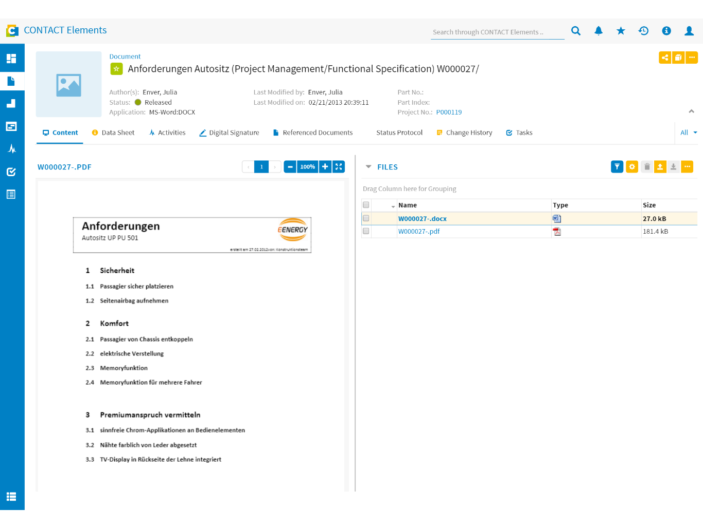
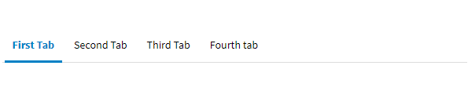

Navigation
Introduction
Navigation is a crucial aspect of the Elements UI. These guidelines explain the general navigation principles, concept, page types and navigation patterns used for navigating within Elements UI.
By acknowledging and living these guidelines we enable users to easily navigate between pages and orientate themselves among different views of the system.
Usage
These guidelines help to foster a consistent navigation within the Elements UI by defining the overall concept and patterns used. Use them as references for designing an application or views.
Navigation Principles
The Elements UI follows common navigation paradigms of web applications. Following these means to consider three important aspects, which are used to communicate the past, present, and future interaction between the user and the system. Hence, the interface has to answer three questions every user has at the back of their mind when interacting with a more complex system:
Where am I? (Present): e.g. by using large page titles and clearly highlighted active tabs
Where can I go? (Future): e.g. by serving a clear, easily readable navigation area
Where have I been? (Past): e.g. by using modals
Pages
A page is a defined area of the system, which displays at least one component and can be accessed via a unique URL. The Elements UI maintains different page types which are meant for defined cases and subjects. Some page types can be fully customized.
Note
It is recommended to stay cautious about customizing the pages too much. Users will learn how common pages look and behave. By breaking out too much, you may confuse users. For more information about this topic, refer to our Design Principle “Context”.
Application
An application is the part of a product that summarizes related views and functions. In most cases applications are listed in the navigation bar. This is also the main entry for users.
Navigation between Applications
Users typically start their flow on application start pages. It is highly recommended to use application or class pages as start pages for applications. See page types for further information.
The dashboard application is the homepage for the Elements UI by default. It offers useful features to get inter-application insights on new activities and data. The user starts from here and navigates forward into other applications, which is supported by the navigation bar or specific widgets linking to other applications and objects. This results in an URL change within the same tab. If users want to open a link in a new tab, they have to do that consciously.
Within the application scope, the navigation bar will always be displayed offering quick access to applications activated for the user. By navigating to an application, the user opens the start page of an application, which is also the first navigation level. From here the user is able to navigate to an object page, which displays detailed information of a specific object. As object pages have unique URLs, users can enter them not only via application pages but also from other applications, object pages, e-mails, documents and so on.
Applications can enable inter-application flows by displaying related objects and their operations within other object pages.
The Elements UI does not make a distinction between links within one app or links to other applications. Every form of navigation behaves the same. The Browser-Back Button enables the user to always go back to the previous page the user came from.
Applications can be connected in different ways in order to generate a flow:
- Clicking on an application tab in the navigation bar
- Clicking on links to related objects of other applications
- Actions on buttons for transactional operations in other applications
Navigation Depth
In order to simplify navigating around pages and applications, the navigation depth is straightforward. Within the application scope, there are two navigation levels
First Level: Application Pages & Class Pages
Second Level: Object Page & Create Page
Furthermore there are pages which are not part of the application scope. These pages are called primitive pages. They display information not directly related to an application but the general system itself (e.g. 404 pages or user settings)
Navigation in Split-Screen Layouts
In some applications and objects the content is displayed within a split-screen layout. Users are able to select and activate an object in the master column of a split-screen (outer left) while an overview or preview of the selected/activated objects will be displayed in the detail column.
In some cases a secondary master column can be configured to offer a three-level navigation (master-slave-detail) in a single view.
The navigation within a split-screen layout does not result in a URL change.
Page Types
The Elements UI has different page types which are listed below.
Login Page
The Login page will be accessed, if the user enters a CONTACT Elements URL and isn‘t logged in already. Users can enter their credentials (username and password) in order to enter the application scope.

Logout Page
If the user logs out explicitly, she will enter the logout page. The logout page informs the user about the successful logout and enables her to return to the login page.
Class Page
Each class configured incorporates a class page. Class pages give an overview over specific objects as well as enabling global operations (e.g. creating). They are the start page of an application that correlates with a class. There are two types of class pages:
- Without configuration effort: a genereted class page which always includes a search area and a result area with matching objects of a class.
- With configuration effort: a composed class page which includes special features like a preview of the selected object in the result area.
Generated Class Page
Composed Class Page
Application Page
An application page is a composed page of an application. Application pages mostly don‘t correlate with a single class. As application pages are typically used as start pages of applications, it is recommended to design them as an overview of entities. A good example of an application page is the dashboard.
Object Page
An object page defines the second layer within the application scope. It offers detailed information, relationships and tools of an individual object. There are two types of object pages:
- Without configuration effort: a genereted object page that consists of an empty object header and a datasheet.
- With configuration effort: a composed object page that consists of a configured object header and multiple features and views organized in tabs.
Generated Object Page

Composed Object Page
Tool View
A tool view is adapted view on one or multiple objects. It typically incorporates special tools and features in order to work with a special type of object. They adapt to the specific context of an object in terms of layout and interaction patterns and thus can be highly customized.
Create Page
A create page can be opened on application and class pages in order to create new objects of a class. They consist of large forms. Opening a create page results in a new URL.
Caution
Do not use create pages for creating a new object-relationship or a new object within an existing object (e.g. document in a project). Instead use modals for these cases.
Primitive Page
A primitive page displays content, which does not directly relate to an application or object but the system itself. That’s why primitive pages do not incorporate the navigation bar but only the content pane. Primitive pages have their own URL.
Browser History
- A new history entry (URL) will be created, if the user navigates to another application or to another page within the application allowing users to navigate back by using the native browser back button.
- A new history entry (URL) will also be created, if the user conducts a search operation within an application class page, enabling users to save their search as a favorite or sending it as a link to other users.
- The URL stays the same, if modes or states of a view are changed within an application. Example: While changing a datasheet from its read-only state into an edit-state, the URL does not change.
Navigation Patterns
There are different elements and methods to foster easy navigation. Below you will find a set of components that supports handling and situation within the product.
Links
Links are mostly used in lists and tables as well as in the object header. They are underlined and emphasized by color for a better affordance. Links will typically navigate users to related objects, external websites/applications or mail clients.
More about this component: Link
Modals
Modals are important elements for an intuitive navigation. Users can stay on a page and thus in context while completing a complex task. Therefore modals should be used so that users can focus on a specific task within an application, class or object page.
As Modals prevent the user from interacting with elements on the page, they should be used carefully. In Elements UI applications modals are typically used for manageable operations, searching and selecting objects out of a catalog for further operation or editing the datasheet of an object.
Tabbars

Tabbars are used to separate views and information of a specific container. They make it easy to quickly explore and switch between different views or functions of a container. A container can be a whole page (e.g. an object page) or a single component within a page (e.g. a pop-over). They are always placed directly above the content and spread in a single row.
A default tab should be carefully designed. The content has to be configured, so that it fits the use case of the specific page or component. The order of the tabs should also follow a priority from left to right for better readability.
Side Navigations
A side navigation can contain a list or tree of navigational elements. A side navigation should be used if the amount of your navigation points is too large or the structure is too complex. Use side navigations to enable users to explore the hierarchy and find the specific destination without having to load a new page every time.
{kind=link}
{kind=link}
{kind=link}
{kind=link}
{kind=link}
{kind=link}
{kind=link}
{kind=link}
{kind=link}
{kind=link}